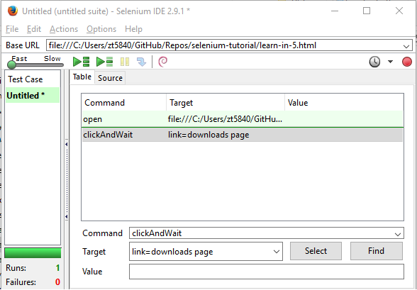
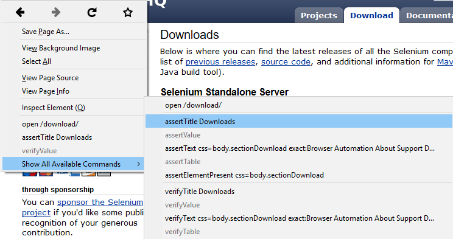
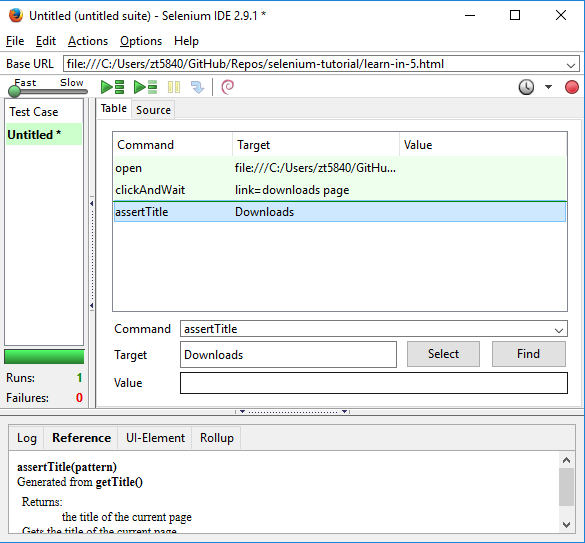

Learn in 5 Minutes
Installing the IDE
Using Firefox, first, download the IDE from the SeleniumHQ downloads page
Firefox will protect you from installing addons from unfamiliar locations, so you will need to click ‘Allow’ to proceed with the installation.
When downloading from Firefox, you’ll be presented with the IDE window.
Select Install Now. The Firefox Add-ons window pops up, first showing a progress bar, and when the download is complete.
Restart Firefox. After Firefox reboots you will find the Selenium-IDE listed under the Firefox Tools menu.
Opening the IDE
To run the Selenium-IDE, simply select it from the Firefox Tools menu. It opens as follows with an empty script-editing window and a menu for loading, or creating new test cases.
Building Test Cases
Recording¶
Many first-time users begin by recording a test case from their interactions with a website. When Selenium-IDE is first opened, the record button is ON by default. If you do not want Selenium-IDE to begin recording automatically you can turn this off by going under Options > Options... and deselecting “Start recording immediately on open.”
During recording, Selenium-IDE will automatically insert commands into your test case based on your actions. Typically, this will include:
- clicking a link - click or clickAndWait commands
- entering values - type command
- selecting options from a drop-down listbox - select command
- clicking checkboxes or radio buttons - click command
An illustration is shown below in screenshot 1
Here are some “gotchas” to be aware of:
- The type command may require clicking on some other area of the web page for it to record.
- Following a link usually records a click command. You will often need to change this to clickAndWait to ensure your test case pauses until the new page is completely loaded. Otherwise, your test case will continue running commands before the page has loaded all its UI elements. This will cause unexpected test case failures.
Running Test Cases
The IDE allows many options for running your test case. You can run a test case all at once, stop and start it, run it one line at a time, run a single command you are currently developing, and you can do a batch run of an entire test suite. Execution of test cases is very flexible in the IDE.
An illustration is shown below in screenshot 3
Screnshots
- Screenshot 1 
- Screenshot 2 
- Screenshot 3 
Reference
Selenium-IDE Guide: http://www.seleniumhq.org/docs/02_selenium_ide.jsp